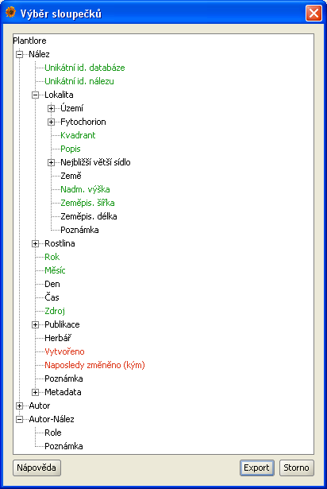

Vaše nálezová data jsou při práci s Plantlore uchovávána v databázi. K datům nelze přistupovat přímo; přenos dat na jiné počítače vyžaduje použití Exportu a Importu. Export dat slouží k "vytažení" nálezových dat z databáze a uložení do souboru na disku vašeho počítače.
Export lze provádět po připojení k jakékoli databázi - i k databázi vzdálené. Tehdy se vyplatí zvážit přenosovou kapacitu linky, kterou používáte pro připojení, neboť se může přenášet velké množství dat a doba nutná k provedení celé operace by byla neúnosná.
Současně může probíhat pouze jeden export nálezových dat.
V Přehledu záznamů je nutné vybrat (označit) nálezové záznamy, které chcete exportovat. Pro zúžení okruhu, z něhož budete záznamy vybírat, použijte Vyhledávání. Z těchto záznamů můžete ještě explicitně označit ty, které jsou důležité. Neoznačíte-li žádné záznamy, Plantlore se bude chovat, jako byste označili všechny; tím vám usnadní práci s jejich označováním.
Na následujícím obrázku je označeno 11 záznamů z 19. Vyexportováno bude označených 11 záznamů.
Exportování nálezových dat probíhá ve dvou krocích.
Zvolte jméno souboru, do kterého se mají data uložit, a jeho formát. K dispozici je několik základních formátů:
Tento krok je volitelný a nabízí jej pouze formáty XML, CSV a StdOut. Zbylé formáty automaticky exportují záznam se všemi jeho atributy. Volba atributů nálezového záznamu se provádí označováním položek v zobrazeném stromě. Červeně jsou označeny položky, které je nutné vybrat, pokud budete chtít data znovu nahrát do Plantlore (více viz Import nálezových dat).
Nevyberete-li žádné atributy, předpokládá se, že jste označili všechny.

Po dokončení výběru atributů je zahájen export dat. Průběh procesu můžete sledovat v otevřeném okně. Rozhodnete-li se export zrušit, stiskněte tlačítko Storno a export bude předčasně ukončen. Soubor bude obsahovat pouze ta data, která se stihla zapsat, než došlo ke zrušení operace. Je zaručeno, že i při zrušení operace bude formát souboru validní.